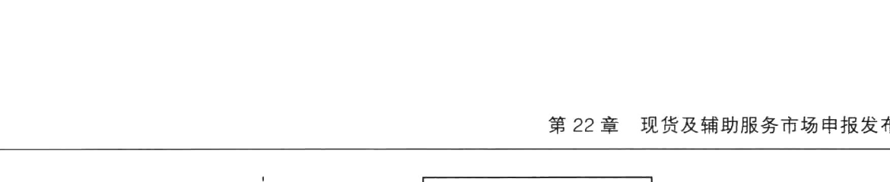
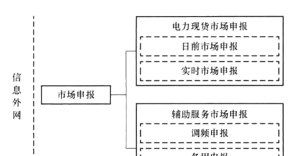
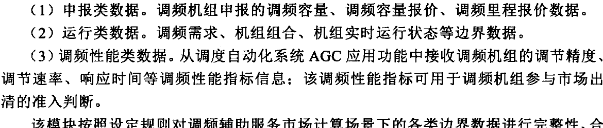
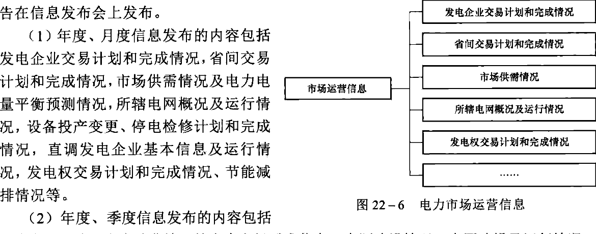

第22章 现货及辅助服务市场申报发布

电力现货市场申报、日前市场申报、实时市场申报、辅助服务市场申报、调频申报、备用申报……

22.1.1 电力现货市场申报
22.1.1.1 日前市场申报
日前市场申报功能主要是为市场主体参与日前市场提供报价入口。日前市场申报应在规定的申报窗口期进行，一般在竞价日的上午。不同的市场主体，在不同的市场模式、不同的市场阶段申报要求不同。发电侧，参与市场的机组必须参与日前报价，不参与市场的机组则申报自计划的机组出力，而水电、热电联产等机组，可能还有其他的申报要求。用电侧，根据市场模式不同，可采用报量不报价、报量报价两种方式。
发电侧日前市场报价内容包括报价机组、电能价格、电能成本、日前备用、申报时间等数据。用电侧日前市场报价内容包括用户或售电公司主体、电能价格、电力负荷、申报时间等数据。系统后台可设置申报开始时间、申报结束时间、准入机组。操作功能包括数据录入、保存、删除。通过后台配置，市场主体可一次性申报未来多日的报价数据，然后根据实际需求每日微调或者不调报价数据。系统也支持参照历史报价数据进行复制
调整的报价方式。
（1）针对市场化发电企业，日前市场出清申报的数据包括：
1）机组最小启停时间、启停费用。
2）机组分段竞价电力－价格；电力－价格线性递增。
3）其他市场规定的竞价数据，如：① 机组固定出力申报，用于市场主体报量不报价参与电力现货市场申报，在机组固定出力申报模块，市场主体选择申报日期，出力曲线数值信息；② 开停机曲线申报，用于发电机组并网到最小出力时段、最小出力时段到脱网阶段的市场出清电力平衡；③ 日前常设报价，主要用于成本补偿、未报价市场成员的出清、替换避开机组的申报价格。
（2）针对非市场机组，日前市场申报数据包括非市场机组各个时段的机组出力计划。
（3）针对水电机组，日前市场申报数据包括次日发电电量。
（4）针对热电联产机组，另需申报数据包括次日供热计划。
（5）针对电力用户或售电公司，日前市场申报数据包括各时段各负荷并网点的负荷需求。根据市场模式不同，可采用报量不报价、报量报价两种方式。
1）报量不报价：申报各个时段的需求电力值。
2）报量报价：申报各个时段的需求和价格曲线，每一个时段，可以申报多个电力和电价数据，形成电力－价格线性递减曲线。
日前市场出清申报数据经数据校验后进入日前市场出清环节。数据校验内容包括申报价格是否单调递增或递减、申报电力区间是否合规等，校验不通过的数据将退回要求重新申报。市场成员可申报缺省报价参数。
22.1.1.2 实时市场申报
实时市场申报功能为市场主体参与实时市场提供报价数据，用于平衡市场的出清，报价内容与日前市场类似。实时市场仅接受发电侧主体的报价，负荷侧不需要报价，实时市场出清采用负荷预测数据进行。
对于发电企业，报价数据包括：
（1）机组最小启停时间、启停费用。
（2）机组各时段分段竞价电力－价格。
（3）各段电力－价格线性递增。
（4）其他市场规定的竞价数据。
对于日前市场未中标的机组，在日前市场出清结束后，可以下调报价作为实时市场报价。对于日前市场已中标的机组，不能调整报价，直接按照日前报价参与实时市场。
实时市场申报数据经数据校验后进入实时市场出清环节，数据校验包括申报价格是否单调递增或递减、申报电力区间是否合规等，校验不通过的数据将退回要求重新申报，市场成员须申报缺省报价参数。
22.1.2 辅助服务市场申报
当前辅助服务市场仍在发展中，技术支持系统研发以调频及备用辅助服务功能为主，
未来仍需结合新的品种和交易机制设计进行相应功能的改造升级。
22.1.2.1 调频申报
调频申报模块包括申报类数据、运行类数据和调频性能类数据。
（1）申报类数据。调频机组申报的调频容量、调频容量报价、调频里程报价数据。
（2）运行类数据。调频需求、机组组合、机组实时运行状态等边界数据。
（3）调频性能类数据。从调度自动化系统AGC应用功能中接收调频机组的调节精度、调节速率、响应时间等调频性能指标信息；该调频性能指标可用于调频机组参与市场出清的准入判断。
该模块按照设定规则对调频辅助服务市场计算场景下的各类边界数据进行完整性、合理性校验，存在数据缺失或数据错误时按照严重等级给出告警。
22.1.2.2 备用申报
备用申报模块包括申报类数据和运行类数据。
（1）申报类数据。机组申报的备用市场量价信息。
（2）运行类数据。备用需求、机组组合、机组实时运行状态、系统负荷预测等边界数据。
该模块按照设定规则对备用辅助服务市场计算场景下的各类边界数据进行完整性、合理性校验，存在数据缺失或数据错误时按照严重等级给出告警。
22.2 信息发布
电力现货市场的信息发布涵盖在申报发布子系统模块中，该模块的信息发布包含了电力现货市场及中长期市场的信息发布，本节从信息发布类型和信息发布来源两个方面，重点介绍与电力现货市场相关的发布信息。电力现货市场信息发布模块结构图如图22-4所示。
22.2.1 按发布信息类型分类
信息发布按照市场信息发布规则，向市场成员、政府能源主管部门、电力监管部门发布市场交易的相关信息，主要包括市场交易信息和市场运营信息两大类，支持市场主体对发布信息的及时公平访问。信息发布应支持严格的身份认证和灵活的发布信息配置，适应发布内容调整，支持对公有信息和私有信息分类管理，其中公有信息向社会公众发布，私有信息向全部或特定的市场成员发布。
市场交易信息是指电力交易产生的信息，包括向市场主体发布的交易组织信息、交易结果信息、交易执行信息等。交易信息以私有信息和交换信息为主。

市场运营信息是指按照市场运营规则，定期向市场主体发布的相关市场信息。市场运营信息以公众和公开信息为主。
22.2.1.1 市场交易信息
如图22-5所示，电力现货市场交易信息包括市场预测信息、检修计划信息、电网运行信息、日前市场出清结果、实时市场出清结果和辅助服务市场信息。
1. 市场预测信息发布
市场预测信息发布主要用于发布未来一段时间内市场供需信息，是各类市场主体参与市场竞争的重要决策依据，市场预测信息准确、及时传达到各类市场主体是市场与电网安全、经济、稳定运行的重要保障。
2. 检修计划信息发布
市场运营机构通过发布未来电网设备检修计划信息，帮助市场成员合理安排电能生产与使用计划，合理制定市场竞争策略，设备检修计划信息直接影响了市场有效竞争空间。检修计划包括发、输、配、用环节中各种影响市场运营和电网运行的重要设备在未来一段时间内的停用和启用信息。
3. 电网运行信息发布
电网运行信息发布用于发布电网运行情况。在电力市场环境下，市场运营结果最终都需要通过物理电网进行承载和执行，电网运行状态直接反映了市场运营的效率和经济性，市场运营结果最终需要在保证电网安全运行的前提下实现电力商品属性。通过对各类市场主体发布电网实际运行情况，帮助市场主体了解电网及相关设备物理运行特性，进而更加合理制定市场策略，帮助市场运营机构评估市场规则合理性。
4. 日前市场出清结果发布
支持手动或自动方式将日前发电计划发送到智能电网调度控制系统。
5. 平衡市场出清结果发布
平衡市场出清完成后，需根据设定自动将计划发送到全局数据库，并更新计算时间范围内对外共享的机组最新计划与价格。也可以根据设定人工确认是否接受实时发电计划与价格。实时发电计划与价格确认更新后通过信息发布功能进行发布。
6. 辅助服务市场信息发布
辅助服务市场信息发布主要包括辅助服务需求信息、调频市场出清结果、备用市场出清结果、调峰市场出清结果等。
22.2.1.2 市场运营信息
如图22-6所示，电力市场运营信息分为发电企业交易计划和完成情况、省间交易计划和完成情况、市场供需情况、所辖电网概况及运行情况、发电权交易计划和完成情况等，各类信息都要在网站上予以披露，年度、季度信息还要通过年度、季度信息发布报
告在信息发布会上发布。
（1）年度、月度信息发布的内容包括发电企业交易计划和完成情况，省间交易计划和完成情况，市场供需情况及电力电量平衡预测情况，所辖电网概况及运行情况，设备投产变更、停电检修计划和完成情况，直调发电企业基本信息及运行情况，发电权交易计划和完成情况、节能减排情况等。
（2）年度、季度信息发布的内容包括电力市场环境、电力消费情况等电力市场需求信息，电源建设情况、电网建设及运行情况、发电企业发电情况等电力市场供应信息，电力供需平衡情况、电网约束情况等电力市场运营情况，省间交易情况、发电权交易情况等电力市场交易情况，电力市场建设信息等。
22.2.2 按发布信息来源分类
从发布信息来源分类，电力现货市场相关的信息发布来源主要为电网调度机构信息发布和电网公司信息发布两个部分，电网调度机构信息发布内容如图22-7所示。

22.2.2.1 电网调度机构信息发布
1. 事前信息发布
市场主体可以在事前信息发布模块获取系统负荷预测曲线、外来电计划曲线、30min
备用需求、必开机组和必停机组、设备检修计划、电网主要约束信息、固定出力机组发电计划、非水可再生能源发电计划、调频和10min备用需求信息等。
2. 事后信息发布
市场主体可以在事后信息发布模块获取日前市场负荷侧统一电价、日前市场电价、开停机机组组合、日前市场机组电能中标信息、必开机组和必停机组、调频市场机组中标里程、调频市场机组中标容量、调频市场出清信息、实时市场负荷侧统一电价、实时市场机组电能中标信息、实时市场电价、机组计量数据信息等。
22.2.2.2 电网公司信息发布
市场主体可以从电网公司信息发布模块获取电费账单发布信息。电费账单发布信息支持按日期和账单类型查询电费结算账单。包括当月日清分账单、当月月结算账单、当月日清算账单和当月月清算账单的账单详情等。
22.3 本章小结
本章介绍了现货电力市场申报和发布模块的主要构成及功能。申报发布环节部署于全国统一电力市场交易平台，面向各类市场成员，是内外网信息交互的主要环节。各类市场成员可以通过该模块获取市场信息并提交交易需求，其简洁、清晰的界面设计和全面的功能设计有助于提升市场成员的使用体验。未来，申报发布模块也会根据规则设计调整和实际业务需求变化不断升级改造。
第23章 电力现货市场出清
电力现货市场主要开展以电能为主要交易标的物的日前、日内、实时市场，电力现货市场功能是电力现货市场技术支持系统最核心业务功能，主要根据市场模型、市场报价、市场边界等输入数据开展日前、日内、实时电能市场出清计算，输出日前、日内、实时市场的电能出清价格及中标出力。日前市场提前一天确定次日的机组组合、出力和价格，实现次日电力电量的平衡，满足电网安全约束条件；日内市场在日前市场关闭后对发用电计划进行微调，应对预测偏差和非计划状况，开展快速启停决策；实时市场/平衡市场在实际运行前数小时组织实施，真实反映系统资源稀缺程度与系统阻塞程度，实现电力实时平衡和电网安全运行。结合电力市场模式，可同步或分步建立日前市场、日内市场、实时市场/平衡市场。
23.1 日前市场出清
根据市场主体的日前市场申报数据，以机组初始状态、负荷预测、联络线计划等作为市场边界，考虑电网安全约束、机组运行约束、系统约束及其他可行性约束条件，每天分为若干个交易时段（如24或96个时段），按照市场规则以社会福利最大化（或购电费用最小、发电成本最小）等为目标函数进行优化，集中优化出清次日市场成员中标电力，并形成市场出清电价。
23.1.1 出清流程
日前市场出清的业务流程主要包括启动、数据准备、数据校验、市场出清、安全校核、结果分析、结果发布等环节，如图23-1所示。上述流程各个环节采用流程管控，每个环节设定审批人员对操作结果进行审核，流程节点经过对应审批人员审批通过后才能进入下一个流程节点。
23.1.1.1 启动环节
日前市场出清仅支持人工启动计算方式。